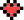

comin’ soon
posers
customize your poser

Welcome to our customiser tool where you can build your own custom poser from start to finish, choosing
among the traits that we have in the main collections plus some new traits that were created exclusively
for this tool!
These posers, if you choose to mint them, will be a part of a separate
collection.